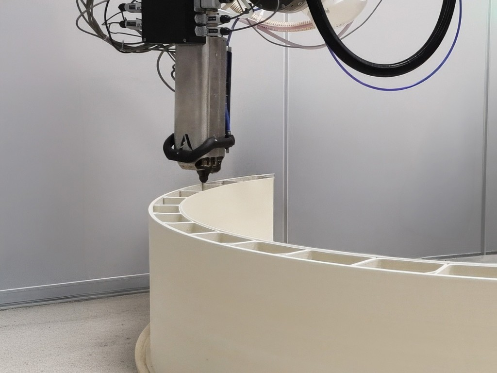

0%
Waste Reduction
Up to 60% less material waste vs conventional bespoke fabrication

LFAM Platform
Multi-axis robotic systems with one logic: digital-first design, precision deposition, and on-demand production at scales conventional fabrication cannot match.
Caracol AM Heron AM and WASP Crane platforms proven from Milan retail to Bergamo Airport.
Robotic structural printing
6-axis architectural extrusion
Design → fabricate → install
Waste Reduction
Up to 60% less material waste vs conventional bespoke fabrication
Robotic Extrusion
Industrial polymer LFAM with full geometric freedom
Typical Lead Time
Days to two weeks for bespoke architectural elements
Dubai 2030 Mandate
3D printing requirement for new buildings ELM is built to comply